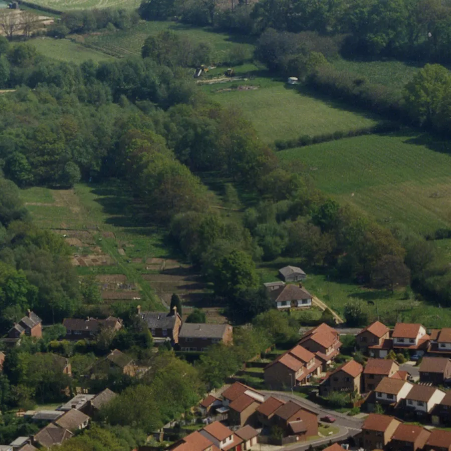
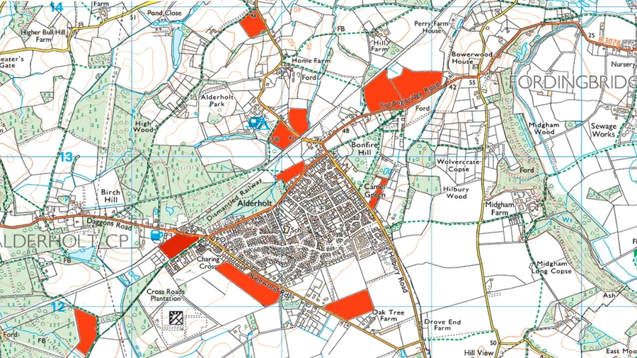
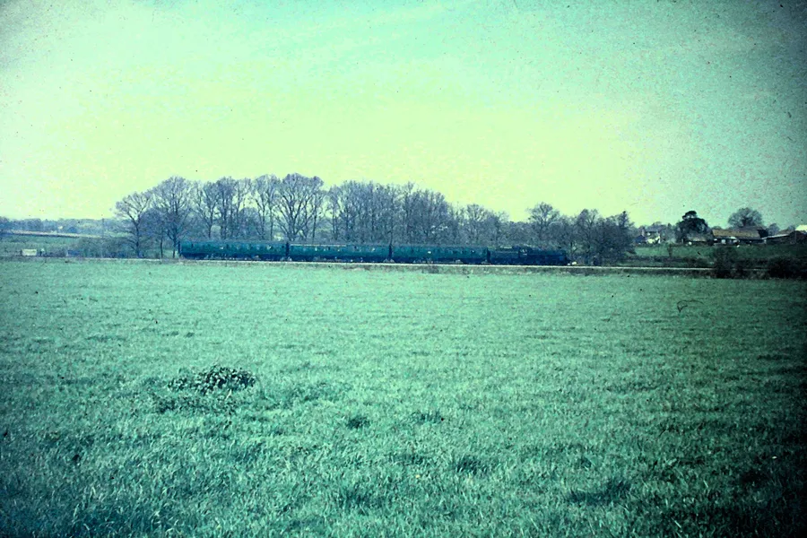
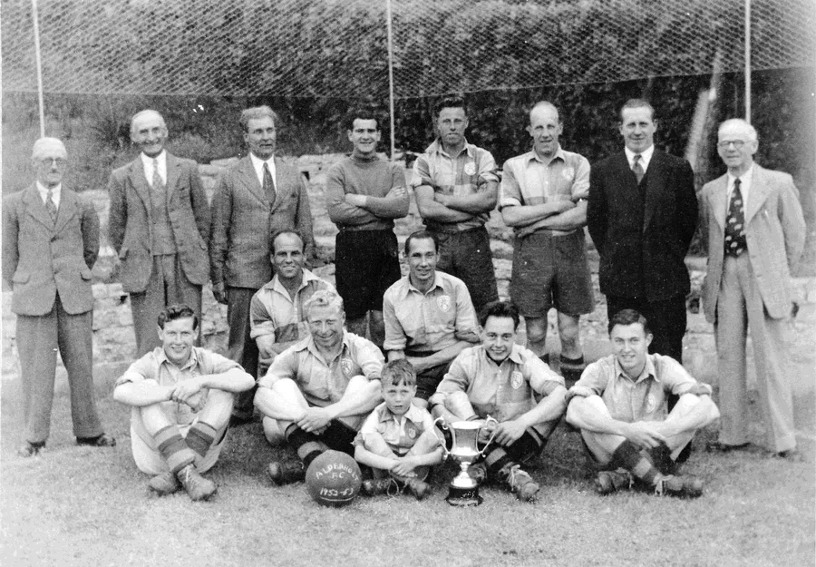
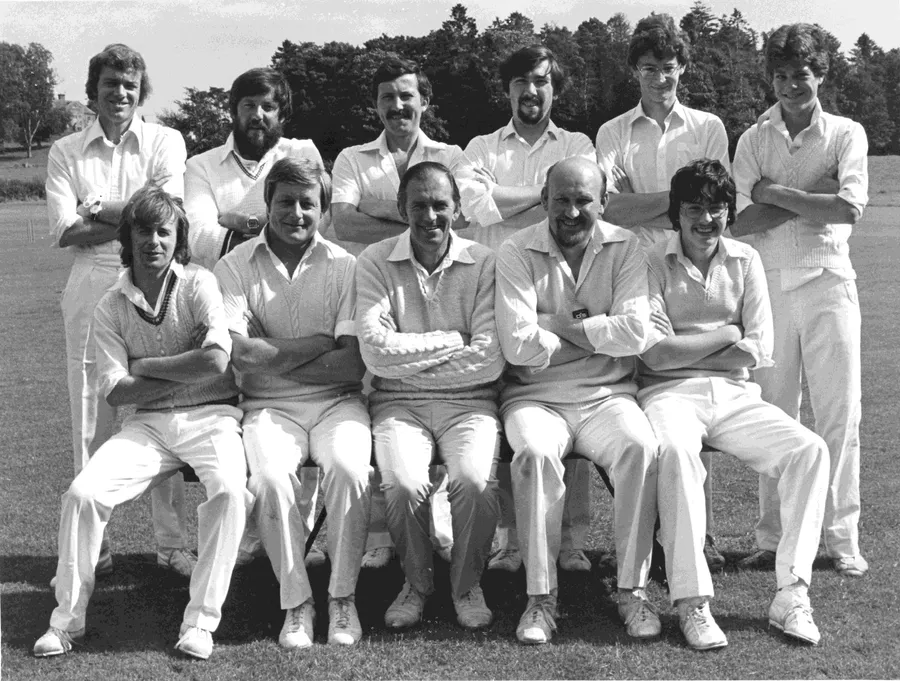
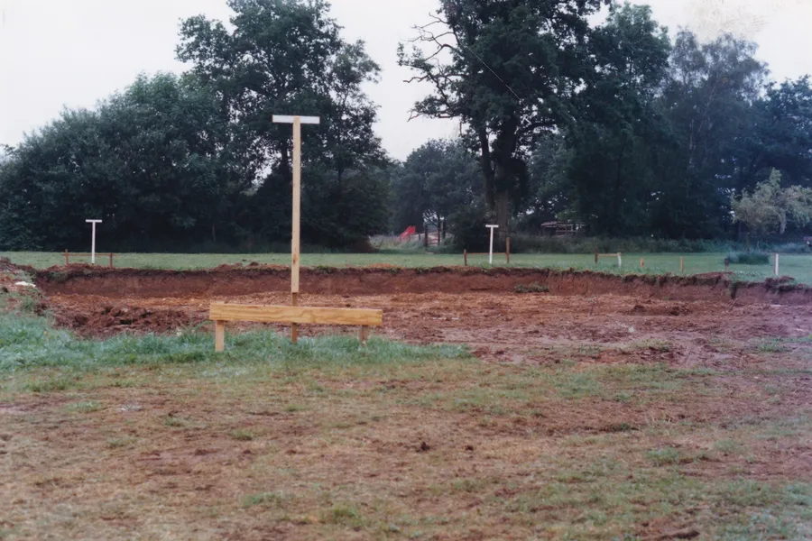
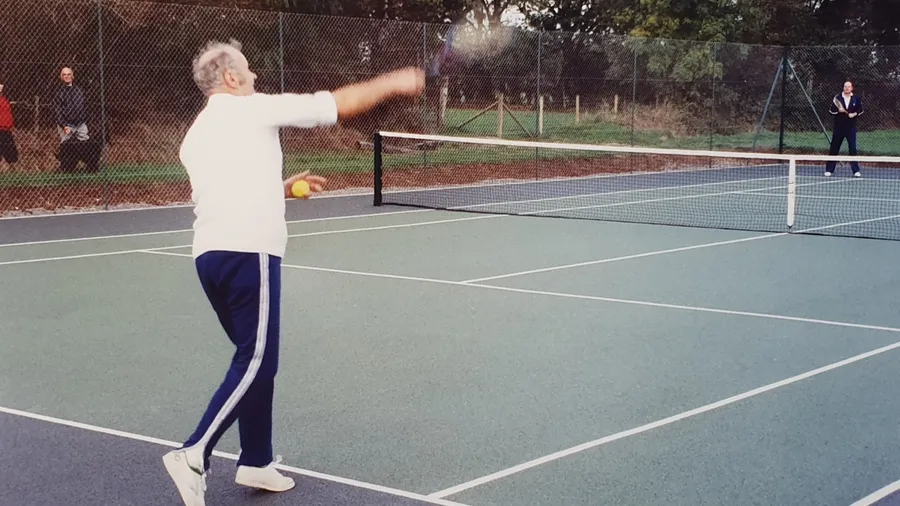
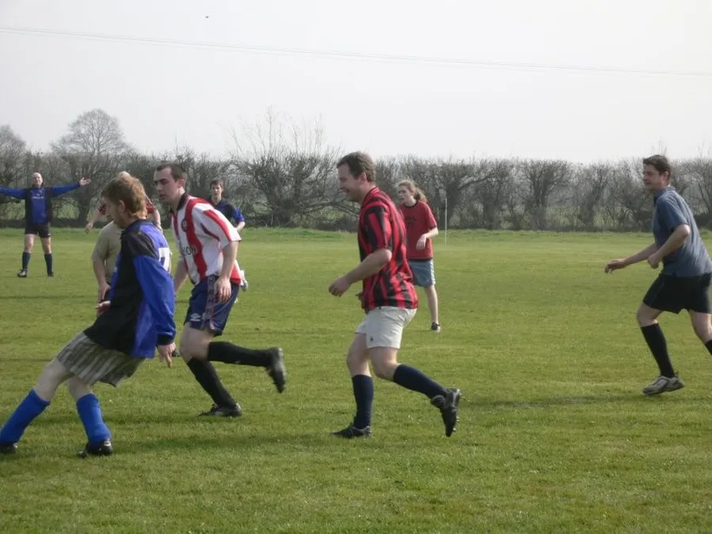
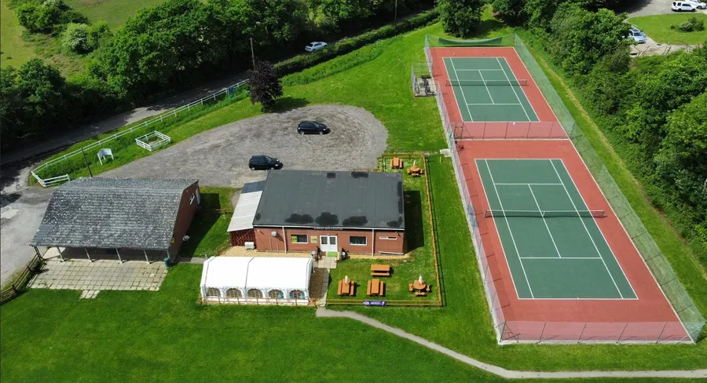

The year 2025 celebrated fifty years since the purchase of the present Recreation Ground. But where has the Recreation Ground been over the years?
The first ground was a strip of land adjacent to the Parish Allotments in Hillbury Road that was enclosed from Alderholt Common and donated to the parish under the Inclosure Award of 1849. This was used for recreational purposes for many years.

An aerial view of the Allotments and the 1849 Inclosure Award
In 1933 members of the Tennis Club requested that a more suitable piece of land should be found. It took some time for the title to be secured in the name of the Parish Council but eventually it was sorted and the original piece of land sold.
Over a period of 43 years several fields in the village were considered but none were bought. It wasn’t until 1975 that a suitable piece of land was found and purchased.
Before the war the Cricket Club was using land in Alderholt Park near the Keepers Cottage then after the war used Mr. Rose’s field off Sandleheath Road.

Fields around the village where Football has been played. Ordnance Survey Landplan 2000
The Football Club have used fields at
Hillbury Road south of the allotments
Between Blackwater Grove and the old railway line belonging to Mr. Pattle which is now Churchill Close.
Blackwater Common
Off Station Road belonging to Mr. Woodvine
Home Farm belonging to Mr. Gilbert
Beyond the railway arch in Sandleheath Road belonging to Mr. Gould
Wolvercroft
Highfield
Crossroads Farm belonging to Mr. Pressley
Rockbourne Recreation Ground

The field on Fordingbridge Road which was used for many years with Hill Farm on the horizon. Picture by Stanley Broomfield
Planning Application 03/423191/HST approved Blackwater Grove for use as the Recreation Ground on 26th March 1965 but it was never used. Feelings ran high at Parish Council meetings on a few occasions over the Recreation Ground problem.
By the mid 1970s with the village beginning to grow in size as a result of the 1972 Village Plan it became urgent that a suitable piece of land was secured. To this end in 1975 an 11-acre field at the north end of Oak Tree Farm was bought for £15,000 and registered in the name of Alderholt Parish Council. It is recorded that “The village was privileged with Councillor David Pattle’s wisdom and foresight to purchase this parcel of land, hence benefiting everyone today.”
The field was effectively purchased by the village itself, as an additional 2p was added to the Parish Rate to repay the loan from the Public Works Loan Board used for its purchase. There was no Grant Aid so it was bought totally with money from village residents.
The same source records that
“The acquisition of the Recreation Ground was just the start of the leisure facilities as a lot of work had to be done to make the site usable for sport. The Football Club wanted to come ‘home’ as they were playing outside the Village. The Cricket Club was reformed having ceased to exist in 1955. A Rugby Club was formed and the Tennis Club asked if they could create courts as they had also been playing on private courts outside the Village.

Alderholt Football Club 1952–53.
Football chose where they wanted their pitch and landscaped it putting in some drainage. The reformed Cricket Club also laid their pitch or square, again moving home.

Alderholt Cricket Club — reformed in 1980 after a 28-year lapse. Back Row L to R, T Moore, M Jones, J Burton, S Broomfield, P Price, J Taylor. Front Row L to R, S Crouch, C Vincent, K Lloyd, B Butler, C Butler.
To develop the ground properly we were going to need funds from Grant Aid. This needed a body to apply for grants. It should be noted that councils at the time could not apply for or receive Grant Aid during that period of time although they could award aid.”
In August 1978 the Alderholt Recreation Association was finally formed at a public meeting in the village. It was the brainchild of Councillor David Pattle, a lifelong resident who played an active role in the community, and local solicitor John Bongard, a wise and knowledgeable man who was always willing to help the village.
The Alderholt Recreation Association (ARA) was registered as Charity 276695 on 2nd November 1978. The ARA was to be a village charity and would incorporate other organisations such as the village hall, sports clubs, churches, WI and so on. Initially there were representatives from eight village clubs and groups to oversee the running of the Recreation Ground.
To make successful grant applications there had to be some sort of legal control or ownership of the property benefiting from a financial grant. To this end while providing financial support the Parish Council as owner leased the land to the ARA for thirty years. The lease was to be held by the trustees and in 2009 the lease was renewed for a further thirty years. Another source said that
“The Trust was legally created for strong controlled stability, gaining the legal provision for grant applications to all funding bodies, both sporting or otherwise.”
In the beginning there was a Recreation Ground Management Committee set up. From that the Pavilion Build Group was to raise some money toward getting a sports pavilion. Planning permission was granted by Wimborne District Council with 03/77/1981/HST granted on 11th January 1978 and 03/79/2692/HST granted on 14th January 1980. The sports pavilion was built in 1980. Covenants on this building forbade the consumption of alcohol.
The maintenance committee usually meets monthly and all other groups meet three monthly at the Pavilion. A member of the building committee for the pavilion records that
“Rev. John Rumens and David Mortimer were executors of The Norman Smith Trust. He left a large amount of money for the recreation ground which was added to build the pavilion. At the time Halls of Oxford brewery had offered to cover the remaining cost if we incorporated a bar in it. But both executors refused to accept such. So the parish had to meet the shortfall.”
A 2.5 acre extension field was purchased in 1979–80 so that a direct link could be provided to the new housing estates. This link field was bought by the Parish Council on the instruction of Councillor David Pattle. It now houses the Amanda Harris Children’s Play Area with some other courts and the Jubilee Orchard. The link field was never added to the lease but the ARA maintain it on a Gentleman’s Agreement.

The footings for the Clubhouse in 1987, made such that a future double skin could be added later.
In March 1986 the Football Club asked if it were possible to build a clubhouse on the Recreation Ground. By April 1986 a £30,000 brewery loan had been secured with an interest rate of 5% fixed. It was agreed that the building should be of prefabricated construction so it could be erected quickly and begin trading as soon as possible.
The building was ordered from Lessers/Rollalong in Verwood and the project started well. Then came a setback as the consortium from which the loan had been arranged sold out to Carlsberg/Tetley. Suddenly they were not happy with the loan arrangement with guarantors and they required more security. The Parish Council had no alternative but to allow a charge to be put on the strip of land that the clubhouse building was going to stand on.
The Clubhouse was planned to be an integral part of the ARA. However as a separate underlease had to be drawn up to facilitate the loan agreement it was decided at this point to separate the Clubhouse project from the rest of the ARA. Thus it would be managed as a separate business but still connected to support the ARA.

Peter Gould on the Tennis Court in the 1990s.
From not having a one penny piece for the project at the beginning of January 1987, the Clubhouse adjacent to the pavilion opened for business on the 21st August 1987. The Clubhouse was overclad in 1995 following planning permission 03/95/0464/FUL from East Dorset District Council (EDDC).
There were plans to create one building as the Alderholt Community Centre. Planning permission 3/16/2370/FUL was granted by EDDC on 6th September 2017 to demolish the Clubhouse and modify the pavilion.

An Inter-Church Football match in 2005
And now for the next fifty years with the ARA serving the village.
Compiled from 'A Century of Service, APC 1894-1994' with additional information from Stuart Rose, Tim Hood and Stanley Broomfield.

An aerial view of the Pavilion, Clubhouse and Tennis Courts. The two new Tennis Courts were opened in October 1990 with the help of a generous donation from the Alderholt Steam Rally. Picture courtesy John Haskel.